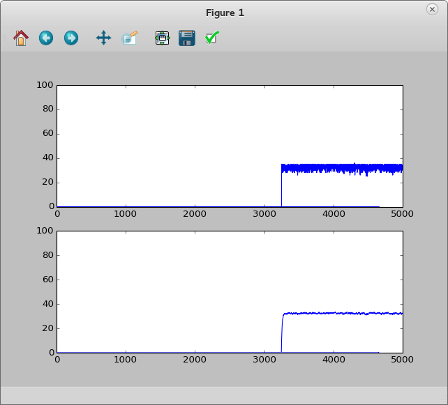
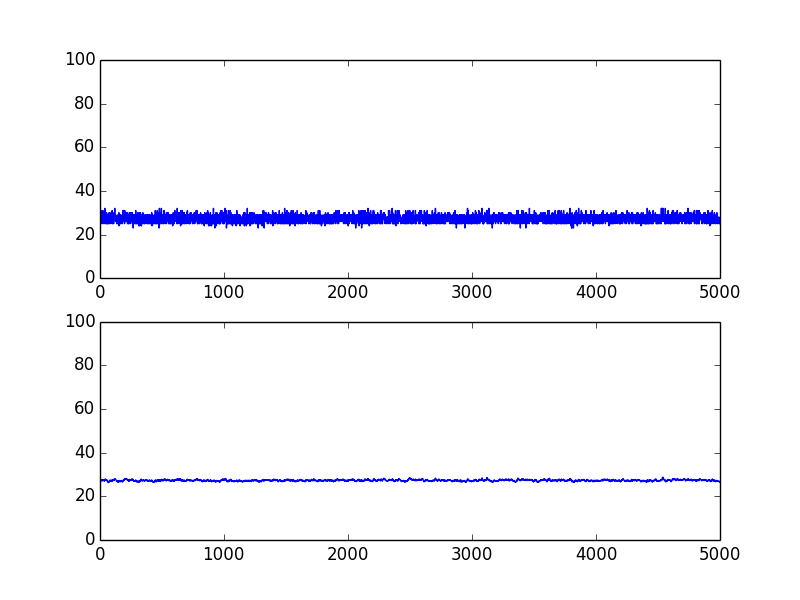

Нарешті в мене з’явилося про що написати пост!
Останній місяць я експериментував із налагоджувальною платою TI MSP430 Launchpad, і при роботі з АЦП дуже не вистачало наочної візуалізації. Оскільки на платі Launchpad є інтерфейс UART-USB, я вирішив виводити отримані дані на графік.
Я використовую мікроконтролер MSP430G2553, і весь код написаний саме для цього контролера.

1. Прошивка мікроконтролера
Прошивка контролера у загальних рисах досить проста: вона просто безперервно відправляє значення з АЦП в UART — з однією ремаркою: перед початком відправки нам потрібно зробити “handshake” — отримати стартовий символ від комп’ютера. Тож високорівневий алгоритм буде таким:
- Ініціалізація UART[1] (9600 бод) та АЦП[2]
- Очікування стартового сигналу (“handshake”)
- У нескінченному циклі відправка температури в UART
Ініціалізація АЦП (канал 10 для читання температури):
void ADC_init(void) {
ADC10CTL0 = SREF_1 + REFON + ADC10ON + ADC10SHT_3;
ADC10CTL1 = INCH_10 + ADC10DIV_3;
}
int getTemperatureCelsius() {
int t = 0;
__delay_cycles(1000); // Не обов'язково
ADC10CTL0 |= ENC + ADC10SC;
while (ADC10CTL1 & BUSY);
t = ADC10MEM;
ADC10CTL0 &= ~ENC;
return (int) ((t * 27069L - 18169625L) >> 16); // магічний перевід у градуси Цельсія
}
Handshake:
// UART Handshake...
unsigned char c;
while ((c = uart_getc()) != '1');
uart_puts((char *)"\nOK\n");
Ми чекаємо на ‘1’ і відправляємо “OK”, коли її отримуємо.
Після цього програма починає безперервно відправляти температуру:
while(1) {
uart_printf("%i\n", getTemperatureCelsius());
P1OUT ^= 0x1;
}
uart_printf перетворює ціле число на рядок і відправляє через UART[3].
Вихідний код прошивки наведено в кінці цього поста.
2. Додаток для побудови графіків (Plotting Application)
Я дуже люблю matplotlib у Python — це чудова бібліотека, щоб візуалізувати що завгодно. Для читання даних з UART я використав бібліотеку pySerial. Це все, що нам потрібно.
Коли ми підключаємо Launchpad до комп’ютера, створюється пристрій /dev/ttyACM0. Це послідовний порт, який нам і потрібно використовувати.
Додаток складається з двох потоків:
- Обробка послідовного порту
- Безперервне оновлення графіка
Обробка послідовного порту
Визначимо глобальну змінну data = deque(0 for _ in range(5000)), вона міститиме дані для побудови графіка, та dataP = deque(0 for _ in range(5000)), яка міститиме згладжені значення.
У потоці послідовного порту відкриваємо з’єднання:
ser = serial.Serial('/dev/ttyACM0', 9600, timeout=1)
Потім робимо “handshake”:
ok = b''
while ok.strip() != b'OK':
ser.write(b"1")
ok = ser.readline()
print("Handshake OK!\n")
Як бачите, ми чекаємо на “OK” у відповідь на “1”. Після “handshake” можемо починати читати дані:
while True:
try:
val = int(ser.readline().strip())
addValue(val)
except ValueError:
pass
UART не дуже стабільний, тому іноді можна отримати спотворені дані. Тому я просто ковтаю винятки (that’s why I eat exceptions).
Функція addValue додає нове значення до черги та вираховує зважене ковзне середнє (EMA):
avg = 0
def addValue(val):
global avg
data.append(val)
data.popleft()
avg = avg + 0.1 * (val - avg)
dataP.append(avg)
dataP.popleft()
Розрахунок згладжування:
Візуалізація графіка
Створюємо вікно з двома графіками (сирий сигнал та згладжене середнє):
fig, (p1, p2) = plt.subplots(2, 1)
plot_data, = p1.plot(data, animated=True)
plot_processed, = p2.plot(data, animated=True)
p1.set_ylim(0, 100)
p2.set_ylim(0, 100)
def animate(i):
plot_data.set_ydata(data)
plot_data.set_xdata(range(len(data)))
plot_processed.set_ydata(dataP)
plot_processed.set_xdata(range(len(dataP)))
return [plot_data, plot_processed]
ani = animation.FuncAnimation(fig, animate, range(10000), interval=50, blit=True)
plt.show()
Результат роботи програми:

На першому графіку відображаються сирі дані з АЦП, а на другому — згладжені значення.
3. Повні вихідні коди
Python-скрипт (plotter.py)
import matplotlib.pyplot as plt
import matplotlib.animation as animation
import serial
import threading
from collections import deque
data = deque(0 for _ in range(5000))
dataP = deque(0 for _ in range(5000))
avg = 0
def addValue(val):
global avg
data.append(val)
data.popleft()
avg = avg + 0.1 * (val - avg)
dataP.append(avg)
dataP.popleft()
def msp430():
print("Connecting...")
ser = serial.Serial('/dev/ttyACM0', 9600, timeout=1)
print("Connected!")
# Handshake...
ok = b''
while ok.strip() != b'OK':
ser.write(b"1")
ok = ser.readline()
print(ok.strip())
print("Handshake OK!\n")
while True:
try:
val = int(ser.readline().strip())
addValue(val)
print(val)
except ValueError:
pass
if __name__ == "__main__":
threading.Thread(target=msp430).start()
fig, (p1, p2) = plt.subplots(2, 1)
plot_data, = p1.plot(data, animated=True)
plot_processed, = p2.plot(data, animated=True)
p1.set_ylim(0, 100)
p2.set_ylim(0, 100)
def animate(i):
plot_data.set_ydata(data)
plot_data.set_xdata(range(len(data)))
plot_processed.set_ydata(dataP)
plot_processed.set_xdata(range(len(dataP)))
return [plot_data, plot_processed]
ani = animation.FuncAnimation(fig, animate, range(10000), interval=50, blit=True)
plt.show()
Прошивка MSP430 на C (main.c)
#include <msp430g2553.h>
#include <legacymsp430.h>
#include <stdarg.h>
// Прототипи функцій
void uart_init(void);
void uart_set_rx_isr_ptr(void (*isr_ptr)(unsigned char c));
unsigned char uart_getc();
void uart_putc(unsigned char c);
void uart_puts(const char *str);
void uart_printf(char *, ...);
void ADC_init(void);
int getTemperatureCelsius(void);
void uart_rx_isr(unsigned char c) {
P1OUT ^= 0x40;
}
int main(void) {
WDTCTL = WDTPW + WDTHOLD;
BCSCTL1 = CALBC1_8MHZ; // DCO 8 МГц
DCOCTL = CALDCO_8MHZ;
P1DIR = 0xff;
P1OUT = 0x1;
ADC_init();
uart_init();
uart_set_rx_isr_ptr(uart_rx_isr);
__bis_SR_register(GIE); // глобальний дозвіл переривань
// UART Handshake
unsigned char c;
while ((c = uart_getc()) != '1');
uart_puts((char *)"\nOK\n");
ADC10CTL0 |= ADC10SC;
while(1) {
uart_printf("%i\n", getTemperatureCelsius());
P1OUT ^= 0x1;
}
}
void ADC_init(void) {
ADC10CTL0 = SREF_1 + REFON + ADC10ON + ADC10SHT_3;
ADC10CTL1 = INCH_10 + ADC10DIV_3;
}
int getTemperatureCelsius(void) {
int t = 0;
__delay_cycles(1000);
ADC10CTL0 |= ENC + ADC10SC;
while (ADC10CTL1 & BUSY);
t = ADC10MEM;
ADC10CTL0 &= ~ENC;
return (int) ((t * 27069L - 18169625L) >> 16);
}
// UART реалізація
#define RXD BIT1
#define TXD BIT2
void (*uart_rx_isr_ptr)(unsigned char c);
void uart_init(void) {
uart_set_rx_isr_ptr(0L);
P1SEL = RXD + TXD;
P1SEL2 = RXD + TXD;
UCA0CTL1 |= UCSSEL_2; // SMCLK
// 8,000,000Hz, 9600 Baud
UCA0BR0 = 52;
UCA0BR1 = 0;
UCA0MCTL = 0x10 | UCOS16;
UCA0CTL1 &= ~UCSWRST;
IE2 |= UCA0RXIE;
}
void uart_set_rx_isr_ptr(void (*isr_ptr)(unsigned char c)) {
uart_rx_isr_ptr = isr_ptr;
}
unsigned char uart_getc(void) {
while (!(IFG2 & UCA0RXIFG));
return UCA0RXBUF;
}
void uart_putc(unsigned char c) {
while (!(IFG2 & UCA0TXIFG));
UCA0TXBUF = c;
}
void uart_puts(const char *str) {
while (*str) uart_putc(*str++);
}
interrupt(USCIAB0RX_VECTOR) USCI0RX_ISR(void) {
if (uart_rx_isr_ptr != 0L) {
(uart_rx_isr_ptr)(UCA0RXBUF);
}
}
// Легковагова uart_printf
static const unsigned long dv[] = {
1000000000, 100000000, 10000000, 1000000, 100000,
10000, 1000, 100, 10, 1
};
static void xtoa(unsigned long x, const unsigned long *dp) {
char c;
unsigned long d;
if (x) {
while (x < *dp) ++dp;
do {
d = *dp++;
c = '0';
while (x >= d) ++c, x -= d;
uart_putc(c);
} while (!(d & 1));
} else {
uart_putc('0');
}
}
static void puth(unsigned n) {
static const char hex[16] = {'0','1','2','3','4','5','6','7','8','9','A','B','C','D','E','F'};
uart_putc(hex[n & 15]);
}
void uart_printf(char *format, ...) {
char c;
int i;
long n;
va_list a;
va_start(a, format);
while ((c = *format++)) {
if (c == '%') {
switch (c = *format++) {
case 's': uart_puts(va_arg(a, char*)); break;
case 'c': uart_putc(va_arg(a, char)); break;
case 'i':
case 'u':
i = va_arg(a, int);
if (c == 'i' && i < 0) i = -i, uart_putc('-');
xtoa((unsigned)i, dv + 5);
break;
case 'l':
case 'n':
n = va_arg(a, long);
if (c == 'l' && n < 0) n = -n, uart_putc('-');
xtoa((unsigned long)n, dv);
break;
case 'x':
i = va_arg(a, int);
puth(i >> 12);
puth(i >> 8);
puth(i >> 4);
puth(i);
break;
case 0: return;
default: goto bad_fmt;
}
} else {
bad_fmt: uart_putc(c);
}
}
va_end(a);
}
Джерела та подяки
- [1] UART: Stefan Wendler — gpio.kaltpost.de
- [2] ADC: Using the internal temperature sensor on MSP430
- [3] printf: Tiny printf C version for MSP430 (43oh forum)
Цей матеріал було перенесено зі старого блогу antigluk.blogspot.com.